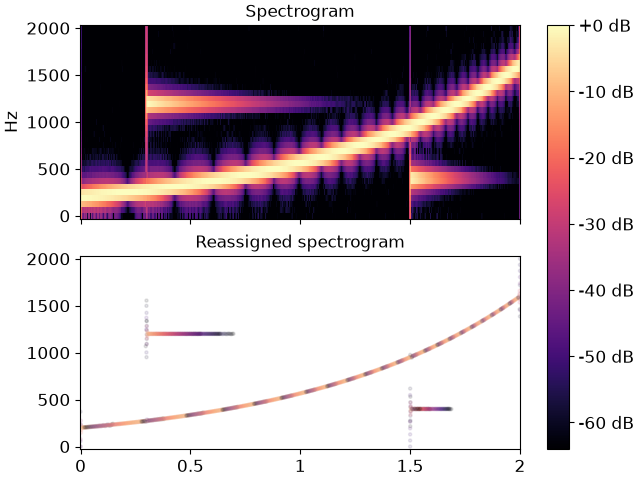

librosa.reassigned_spectrogram
- librosa.reassigned_spectrogram(y, *, sr=22050, S=None, n_fft=2048, hop_length=None, win_length=None, window='hann', center=True, reassign_frequencies=True, reassign_times=True, ref_power=1e-06, fill_nan=False, clip=True, dtype=None, pad_mode='constant')[source]
Time-frequency reassigned spectrogram.
The reassignment vectors are calculated using equations 5.20 and 5.23 in [1]:
t_reassigned = t + np.real(S_th/S_h) omega_reassigned = omega - np.imag(S_dh/S_h)
where
S_his the complex STFT calculated using the original window,S_dhis the complex STFT calculated using the derivative of the original window, andS_this the complex STFT calculated using the original window multiplied by the time offset from the window center. See [2] for additional algorithms, and [3] and [4] for history and discussion of the method.- Parameters:
- ynp.ndarray [shape=(…, n)], real-valued
audio time series. Multi-channel is supported.
- srnumber > 0 [scalar]
sampling rate of
y- Snp.ndarray [shape=(…, d, t)] or None
(optional) complex STFT calculated using the other arguments provided to
reassigned_spectrogram- n_fftint > 0 [scalar]
FFT window size. Defaults to 2048.
- hop_lengthint > 0 [scalar]
hop length, number samples between subsequent frames. If not supplied, defaults to
win_length // 4.- win_lengthint > 0, <= n_fft
Window length. Defaults to
n_fft. Seestftfor details.- windowstring, tuple, number, function, or np.ndarray [shape=(n_fft,)]
a window specification (string, tuple, number); see
scipy.signal.get_windowa window function, such as
scipy.signal.windows.hanna user-specified window vector of length
n_fft
See
stftfor details.- centerboolean
If
True(default), the signalyis padded so that frameS[:, t]is centered aty[t * hop_length]. See Notes for recommended usage in this function.If
False, thenS[:, t]begins aty[t * hop_length].
- reassign_frequenciesboolean
If
True(default), the returned frequencies will be instantaneous frequency estimates.If
False, the returned frequencies will be a read-only view of the STFT bin frequencies for all frames.
- reassign_timesboolean
If
True(default), the returned times will be corrected (reassigned) time estimates for each bin.If
False, the returned times will be a read-only view of the STFT frame times for all bins.
- ref_powerfloat >= 0 or callable
Minimum power threshold for estimating time-frequency reassignments. Any bin with
np.abs(S[f, t])**2 < ref_powerwill be returned as np.nan in both frequency and time, unlessfill_nanisTrue. If 0 is provided, then only bins with zero power will be returned as np.nan (unlessfill_nan=True).- fill_nanboolean
If
False(default), the frequency and time reassignments for bins below the power threshold provided inref_powerwill be returned as np.nan.If
True, the frequency and time reassignments for these bins will be returned as the bin center frequencies and frame times.
- clipboolean
If
True(default), estimated frequencies outside the range [0, 0.5 * sr] or times outside the range [0, len(y) / sr] will be clipped to those ranges.If
False, estimated frequencies and times beyond the bounds of the spectrogram may be returned.
- dtypenumeric type
Complex numeric type for STFT calculation. Default is inferred to match the precision of the input signal.
- pad_modestring
If
center=True, the padding mode to use at the edges of the signal. By default, STFT uses zero padding.
- Returns:
- freqs, times, magsnp.ndarray [shape=(…, 1 + n_fft/2, t), dtype=real]
- Instantaneous frequencies:
freqs[..., f, t]is the frequency for binf, framet. Ifreassign_frequencies=False, this will instead be a read-only array of the same shape containing the bin center frequencies for all frames.- Reassigned times:
times[..., f, t]is the time for binf, framet. Ifreassign_times=False, this will instead be a read-only array of the same shape containing the frame times for all bins.- Magnitudes from short-time Fourier transform:
mags[..., f, t]is the magnitude for binf, framet.
- Warns:
- RuntimeWarning
Frequency or time estimates with zero support will produce a divide-by-zero warning, and will be returned as np.nan unless
fill_nan=True.
See also
stftShort-time Fourier Transform
Notes
It is recommended to use
center=Falsewith this function rather than the librosa defaultTrue. Unlikestft, reassigned times are not aligned to the left or center of each frame, so padding the signal does not affect the meaning of the reassigned times. However, reassignment assumes that the energy in each FFT bin is associated with exactly one signal component and impulse event.If
reassign_timesisFalse, the frame times that are returned will be aligned to the left or center of the frame, depending on the value ofcenter. In this case, ifcenterisTrue, thenpad_mode="wrap"is recommended for valid estimation of the instantaneous frequencies in the boundary frames.Examples
>>> import matplotlib.pyplot as plt >>> amin = 1e-10 >>> n_fft = 64 >>> sr = 4000 >>> y = 1e-3 * librosa.clicks(times=[0.3], sr=sr, click_duration=1.0, ... click_freq=1200.0, length=8000) +\ ... 1e-3 * librosa.clicks(times=[1.5], sr=sr, click_duration=0.5, ... click_freq=400.0, length=8000) +\ ... 1e-3 * librosa.chirp(fmin=200, fmax=1600, sr=sr, duration=2.0) +\ ... 1e-6 * np.random.randn(2*sr) >>> freqs, times, mags = librosa.reassigned_spectrogram(y=y, sr=sr, ... n_fft=n_fft) >>> mags_db = librosa.amplitude_to_db(mags, ref=np.max)
>>> fig, ax = plt.subplots(nrows=2, sharex=True, sharey=True) >>> img = librosa.display.specshow(mags_db, x_axis="s", y_axis="linear", sr=sr, ... hop_length=n_fft//4, ax=ax[0]) >>> ax[0].set(title="Spectrogram", xlabel=None) >>> ax[0].label_outer() >>> ax[1].scatter(times, freqs, c=mags_db, cmap="magma", alpha=0.1, s=5) >>> ax[1].set_title("Reassigned spectrogram") >>> fig.colorbar(img, ax=ax, format="%+2.f dB")
